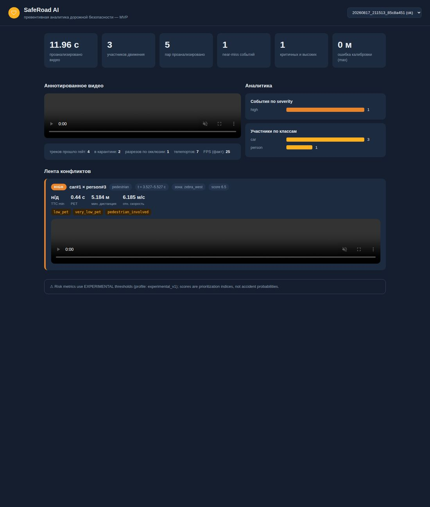
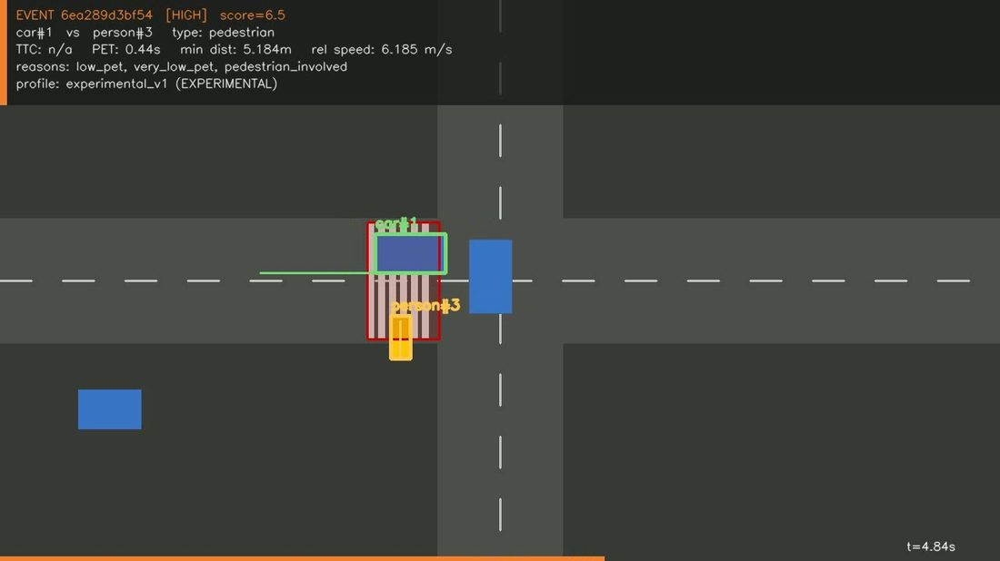

SafeRoad AI превращает существующие городские камеры в превентивную аналитику дорожной безопасности: находит почти-аварии, ранжирует опасные места и показывает, где вмешательство спасёт жизни.
Система анализирует движение машин и пешеходов и находит опасные конфликты до того, как они стали реальными ДТП.
Как это устроено→Перекрёстки выстраиваются по наблюдаемому риску — чтобы ограниченный дорожный бюджет шёл туда, где спасёт больше жизней.
Как это устроено→Сработала ли реконструкция: конфликты и скорости до и после — измеримый KPI для дорожных служб, а не отчёт «на глаз».
Как это устроено→Физику считает геометрия и математика с юнит-тестами. Языковые модели — только для отчётов, никогда для измерений.
Видео с существующей камеры. Проверка качества и реального времени кадров — непригодное отклоняется с причиной.
Каждый участник получает устойчивый ID и траекторию; гомография переводит пиксели в метры и км/ч с оценкой погрешности.
TTC, PET, минимальные дистанции, резкие торможения, геометрия конфликта — детерминированно и с границами применимости.
Каждое событие — клип с метриками и reason codes, который инженер может проверить и опровергнуть. Чёрных ящиков нет.
Полный цикл реализован: от загрузки видео до объяснимых событий с доказательными клипами и дашбордом для инженера.


Полный конвейер: видео → события → доказательства → дашборд
ГотовоРеальный перекрёсток с хокимиятом / СБДД, экспертная разметка
Публичный отчёт точности: precision / recall, ошибка скорости
10+ перекрёстков, рейтинг риска для дорожных служб
Городской центр безопасности, экспорт в Центральную Азию
Хокимият, СБДД, дорожные инженеры, инвесторы — покажем работающую систему и обсудим пилот на одном перекрёстке.